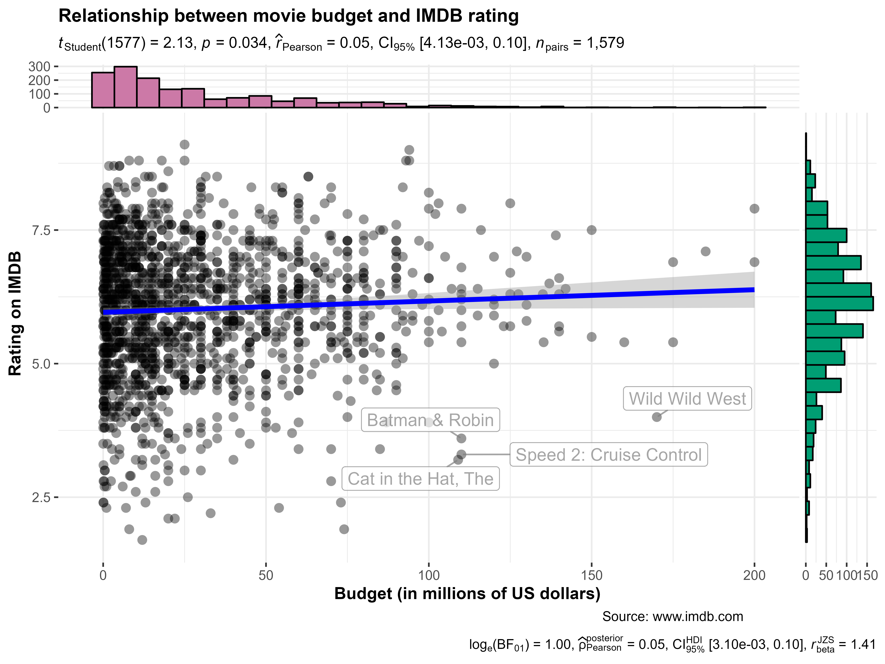
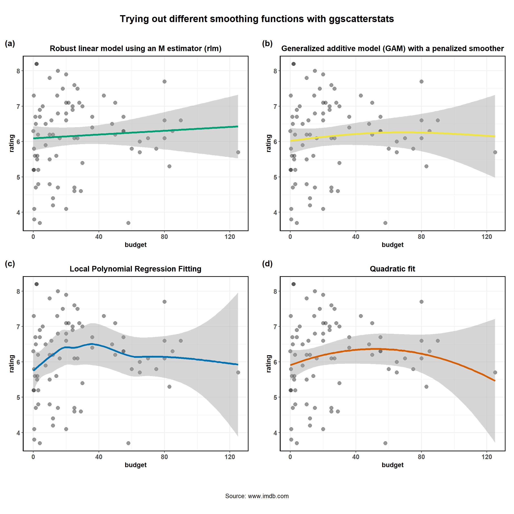

ggscatterstats
Indrajeet Patil
2019-06-18
Source:vignettes/web_only/ggscatterstats.Rmd
ggscatterstats.RmdThe function ggstatsplot::ggscatterstats is meant to provide a publication-ready scatterplot with all statistical details included in the plot itself to show association between two continuous variables. This function is also helpful during the data exploration phase. We will see examples of how to use this function in this vignette with the ggplot2movies dataset.
To begin with, here are some instances where you would want to use ggscatterstats-
- to check linear association between two continuous variables
- to check distribution of two continuous variables
Note before: The following demo uses the pipe operator (%>%), so in case you are not familiar with this operator, here is a good explanation: http://r4ds.had.co.nz/pipes.html
Correlation plot with ggscatterstats
To illustrate how this function can be used, we will rely on the ggplot2movies dataset. This dataset provides information about movies scraped from IMDB. Specifically, we will be using cleaned version of this dataset included in the ggstatsplot package itself.
library(ggstatsplot)
# see the selected data (we have data from 1813 movies)
dplyr::glimpse(x = ggstatsplot::movies_wide)
#> Observations: 1,579
#> Variables: 13
#> $ title <chr> "'Til There Was You", "10 Things I Hate About You", ...
#> $ year <int> 1997, 1999, 2002, 2004, 1999, 2001, 1972, 2003, 1999...
#> $ length <int> 113, 97, 98, 98, 102, 120, 180, 107, 101, 99, 129, 1...
#> $ budget <dbl> 23.0, 16.0, 1.1, 37.0, 85.0, 42.0, 4.0, 76.0, 6.0, 2...
#> $ rating <dbl> 4.8, 6.7, 5.6, 6.4, 6.1, 6.1, 7.3, 5.1, 5.4, 2.5, 7....
#> $ votes <int> 799, 19095, 181, 7859, 14344, 10866, 1754, 9556, 451...
#> $ mpaa <fct> PG-13, PG-13, R, PG-13, R, R, PG, PG-13, R, R, R, R,...
#> $ Action <int> 0, 0, 0, 0, 1, 0, 0, 1, 0, 0, 0, 0, 0, 0, 0, 1, 0, 0...
#> $ Animation <int> 0, 0, 0, 0, 0, 0, 0, 0, 0, 0, 0, 0, 0, 0, 0, 0, 0, 0...
#> $ Comedy <int> 1, 1, 1, 1, 0, 0, 0, 0, 1, 1, 0, 0, 1, 0, 0, 1, 1, 1...
#> $ Drama <int> 0, 0, 0, 1, 0, 1, 1, 0, 1, 0, 1, 1, 0, 1, 1, 0, 1, 0...
#> $ Romance <int> 1, 1, 0, 1, 0, 0, 0, 0, 0, 0, 1, 0, 0, 0, 0, 0, 1, 1...
#> $ NumGenre <int> 2, 2, 1, 3, 1, 1, 1, 1, 2, 1, 2, 1, 1, 1, 1, 2, 3, 2...Now that we have a clean dataset, we can start asking some interesting questions. For example, let’s see if the average IMDB rating for a movie has any relationship to its budget. Additionally, let’s also see which movies had a high budget but low IMDB rating by labeling those data points.
To reduce the processing time, let’s only work with 30% of the dataset.
# for reproducibility
set.seed(123)
# to speed up the calculation, let's use only 10% of the data
movies_10 <- dplyr::sample_frac(tbl = ggstatsplot::movies_long, size = 0.1)
# plot
ggstatsplot::ggscatterstats(
data = movies_10, # dataframe from which variables are taken
x = budget, # predictor/independent variable
y = rating, # dependent variable
xlab = "Budget (in millions of US dollars)", # label for the x-axis
ylab = "Rating on IMDB", # label for the y-axis
label.var = "title", # variable to use for labeling data points
label.expression = "rating < 5 & budget > 100", # expression for deciding which points to label
point.alpha = 0.7,
point.size = 4,
point.color = "grey50",
marginal = TRUE, # show marginal distribution
marginal.type = "density", # type of plot for marginal distribution
centrality.para = "mean", # centrality parameter to be plotted
margins = "both", # marginal distribution on both axes
xfill = "#CC79A7", # fill for marginals on the x-axis
yfill = "#009E73", # fill for marginals on the y-axis
xalpha = 0.5, # transparency for the x-axis marginals
yalpha = 0.75, # transparency for the y-axis marginals
xsize = 1, # size for the x-axis marginals
ysize = 1, # size for the y-axis marginals
type = "pearson", # type of linear association
title = "Relationship between movie budget and IMDB rating",
caption = "Source: www.imdb.com",
messages = FALSE
)
There is indeed a small, but significant, positive correlation between the amount of money studio invests in a movie and the ratings given by the audiences.
The type (of test) argument also accepts the following abbreviations: "p" (for parametric/pearson’s), "np" (for nonparametric/spearman), "r" (for robust).
Important: In contrast to all other functions in this package, the ggscatterstats function returns object that is not further modifiable with ggplot2. This can be avoided by not plotting the marginal distributions (marginal = FALSE). Currently trying to find a workaround this problem.
Using ggscatterstats in R Notebook or R Markdown
If you try including a ggscatterstats() plot inside an R Notebook or R Markdown code chunk, you’ll notice that the plot doesn’t get output. In order to get a ggscatterstats() to show up in these contexts, you need to save the ggscatterstats plot as a variable in one code chunk, and explicitly print it using the grid package in another chunk, like this:
Grouped analysis with grouped_ggscatterstats
What if we want to do the same analysis do the same analysis for movies with different MPAA (Motion Picture Association of America) film ratings (NC-17, PG, PG-13, R)? In that case, we will have to either write a for loop or use purrr, none of which seem like an exciting prospect.
ggstatsplot provides a special helper function for such instances: grouped_ggstatsplot. This is merely a wrapper function around ggstatsplot::combine_plots. It applies ggstatsplot across all levels of a specified grouping variable and then combines list of individual plots into a single plot. Note that the grouping variable can be anything: conditions in a given study, groups in a study sample, different studies, etc.
Let’s see how we can use this function to apply ggscatterstats for all MPAA ratings. We will be running parametric tests (Pearson’s r, i.e.).
(If you set type = "np" or type = "r", results from non-parametric or robust test will be displayed.)
# for reproducibility
set.seed(123)
# to speed up the calculation, let's use only 20% of the data
# also since there are only 7 movies with NC-17 ratings, leave them out
movies_20 <-
dplyr::filter(.data = ggstatsplot::movies_wide, mpaa != "NC-17") %>%
dplyr::sample_frac(tbl = ., size = 0.2)
# plot
ggstatsplot::grouped_ggscatterstats(
# arguments relevant for ggstatsplot::ggscatterstats
data = movies_10,
title.prefix = "MPAA Rating",
x = budget,
y = rating,
xfill = NULL,
package = "ggsci",
palette = "nrc_npg",
grouping.var = mpaa,
label.var = "title",
label.expression = "rating < 5 & budget > 75",
marginal.type = "boxplot",
ggtheme = ggthemes::theme_tufte(),
ggstatsplot.layer = FALSE,
messages = FALSE,
k = 2,
# arguments relevant for ggstatsplot::combine_plots
title.text = "Relationship between movie budget and IMDB rating",
caption.text = "Source: www.imdb.com",
nrow = 3,
ncol = 1,
labels = c("(a)","(b)","(c)","(d)")
)
As seen from the plot, this analysis has revealed something interesting: The relationship we found between budget and IMDB rating holds only for PG-13 and R-rated movies.
Grouped analysis with ggscatterstats + purrr
Although this is a quick and dirty way to explore large amount of data with minimal effort, it does come with an important limitation: reduced flexibility. For example, if we wanted to add, let’s say, a separate type of marginal distribution plot for each MPAA rating or if we wanted to use different types of correlations across different levels of MPAA ratings (NC-17 has only 6 movies, so a robust correlation would be a good idea), this is not possible. But this can be easily done using purrr.
See the associated vignette here: https://indrajeetpatil.github.io/ggstatsplot/articles/web_only/purrr_examples.html
Summary of tests
Following tests are carried out for each type of analyses. Additionally, the correlation coefficients (and their confidence intervals) are used as effect sizes-
| Type | Test | CI? |
|---|---|---|
| Parametric | Pearson’s correlation coefficient | Yes |
| Non-parametric | Spearman’s rank correlation coefficient | Yes |
| Robust | Percentage bend correlation coefficient | Yes |
| Bayes Factor | Pearson’s correlation coefficient | No |
Different smoothing methods
Additionally, different smoothing methods can be specified. For example, if a robust correlation (percentage bend correlation coefficient) is used, we can use a robust smoothing function (MASS::rlm). Additionally, we can also specify different formulas to use for smoothing function. It is important that you set results.subtitle = FALSE since the results will no longer be relevant for the smoothing function used. Below, four different examples are given for how to use different smoothing functions.
library(mgcv)
# for reproducibility
set.seed(123)
# creating a list of plots with different smoothing functions
plot_list2 <- purrr::pmap(
.l = list(
# let's use only 5% of the data to speed up the calculations
data = list(dplyr::sample_frac(tbl = ggstatsplot::movies_wide, size = 0.05)),
x = "budget",
y = "rating",
title = list(
"Robust linear model using an M estimator (rlm)",
"Generalized additive model (GAM) with a penalized smoother",
"Local Polynomial Regression Fitting",
"Quadratic fit"
),
method = list(MASS::rlm,
"gam",
"loess",
"lm"),
formula = list(y ~ x,
y ~ s(x, k = 3),
y ~ x,
y ~ x + I(x ^ 2)),
line.color = list("#009E73", "#F0E442", "#0072B2", "#D55E00"),
marginal = FALSE,
messages = FALSE
),
.f = ggstatsplot::ggscatterstats
)
#> Warning: The statistical analysis is available only for linear model
#> (formula = y ~ x, method = 'lm'). Returning only the plot.
#> Warning: The statistical analysis is available only for linear model
#> (formula = y ~ x, method = 'lm'). Returning only the plot.
#> Warning: The statistical analysis is available only for linear model
#> (formula = y ~ x, method = 'lm'). Returning only the plot.
#> Warning: The statistical analysis is available only for linear model
#> (formula = y ~ x, method = 'lm'). Returning only the plot.
# combining all individual plots from the list into a single plot using combine_plots function
ggstatsplot::combine_plots(
plotlist = plot_list2,
title.text = "Trying out different smoothing functions with ggscatterstats",
caption.text = "Source: www.imdb.com",
nrow = 2,
ncol = 2,
labels = c("(a)", "(b)", "(c)", "(d)")
)
Suggestions
If you find any bugs or have any suggestions/remarks, please file an issue on GitHub: https://github.com/IndrajeetPatil/ggstatsplot/issues
Session Information
For details, see- https://indrajeetpatil.github.io/ggstatsplot/articles/web_only/session_info.html